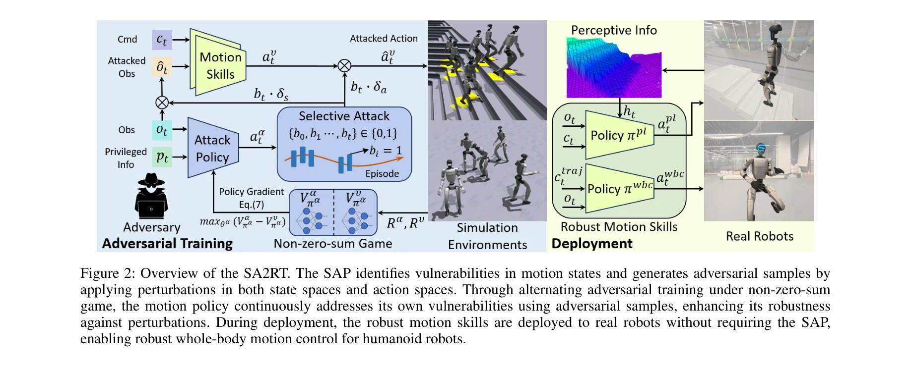

저자: Yang Zhang, Zhanxiang Cao, Buqing Nie, Haoyang Li, Zhong Jiangwei, Qiao Sun, Xiaoyi Hu, Xiaokang Yang, Yue Gao | 날짜: 2025-07-11 | URL: https://arxiv.org/abs/2507.08303

Figure 2: Overview of the SA2RT. The SAP identifies vulnerabilities in motion states and generates adversarial samples b
인간형 로봇의 장시간 안정적 운영을 위해 선택적 적대적 공격(SA2RT)을 통한 견고한 동작 제어 정책을 학습하는 방법을 제안한다. 공격 예산 제약 하에서 취약한 상태와 행동을 찾아 표적화된 섭동을 가하여 정책을 강화한다.
Figure 2: Overview of the SA2RT. The SAP identifies vulnerabilities in motion states and generates adversarial samples b
총평: 본 논문은 선택적 적대적 공격을 통해 인간형 로봇의 동작 견고성을 체계적으로 강화하는 혁신적인 방법을 제시하며, 실제 로봇 플랫폼에서 40% 성공률 향상 등 괄목할 만한 성과를 입증했다. 다만 단일 로봇 플랫폼 실험과 공격 예산 설정의 일반화 측면에서 개선의 여지가 있다.